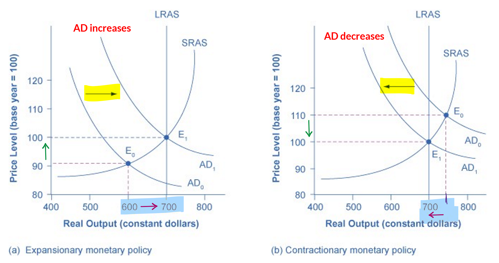
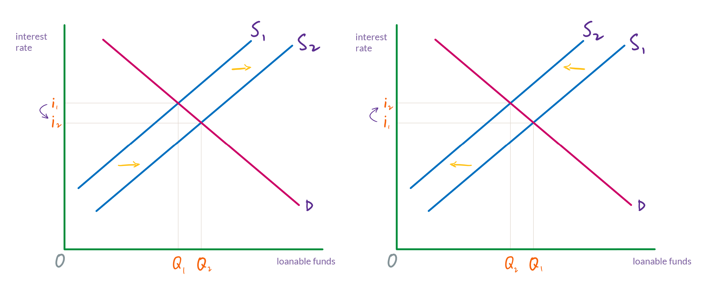

Monetary policy 1: Changing the reserve requirement
Let’s begin by defining monetary policy.
Monetary policy: The actions taken by the central bank to affect GDP, the rate of inflation, and levels of unemployment. These actions primarily involve raising or lowering interest rates.
A monetary policy that lowers interest rates and stimulates borrowing is an expansionary or loose monetary policy. Conversely, a monetary policy that raises interest rates and reduces borrowing in the economy is a contractionary or tight monetary policy.
Recall the factors that will shift aggregate demand (listed in tables 1a and 1b). One is lowering interest rates, which will increase aggregate demand by increasing consumption and investment spending. Raising interest rates will do the opposite: decrease aggregate demand by decreasing consumption and investment spending.
An increase in aggregate demand, as you know, will increase GDP and lower unemployment (and also increase the price level). A decrease in aggregate demand will lower the price level (and also decrease GDP and raise unemployment).
Thus, if the Fed can raise or lower interest rates (which it can), then it can increase or decrease aggregate demand and affect GDP, unemployment, and the price level.

How does the Fed control interest rates?
We have already encountered the supply and demand for loanable funds (figure 2). Loanable funds—that is, money that is used to make loans—is on the horizontal axis. The price that is put on money that is used for loans, an interest rate, is on the vertical axis.

So, if the Fed can increase or decrease the supply of loanable funds, then it will be able to affect interest rates. Changing the interest rate, then, will affect borrowing. Firms and consumers will borrow less when interest rates are high, and they will borrow more when interest rates are low. More borrowing translates into more purchasing, which increases aggregate demand. Less borrowing translates into less purchasing, which decreases aggregate demand.
The Fed can increase or decrease the supply of loanable funds, and we will look at two of the ways that it can (there are more than two, but we’ll focus on two): (1) by changing the reserve requirement and (2) by buying and selling bonds.
Changing the reserve requirement
One way that the Fed can change interest rates is by changing the reserve requirement for all banks.
Given a reserve requirement and an amount of money that a bank is holding in reserve, the money multiplier formula tells us how high the bank’s deposits can get. The level of deposits, then, will determine how much money is available to be used as loans.
As we will see, with a lower the reserve requirement, banks will be required to hold a smaller percentage of their deposits as reserves. Hence, a lower reserve requirement will increase the supply of loanable funds, and so loans (i.e., borrowing) will increase.
On the other hand, a higher reserve requirement means that banks have to hold a larger percentage of their deposits in reserve. Therefore, a higher reserve requirement will decrease the supply of loanable funds, and so loans will decrease. (Note)
A 10% reserve requirement
As we have seen, if the reserve requirement is 10% and a bank has $1,000 in its reserves, then its deposits can reach $10,000.
If the bank is holding $1,000 in its reserves and has $10,000 in deposits, it can loan $9,000.
| assets | liabilities | ||||
|---|---|---|---|---|---|
| reserves | $1,000 | deposits | $10,000 | ||
| loans | $9,000 | ||||
| total | $10,000 | total | $10,000 |
Lowering the reserve requirement
If, however, the Federal Reserve lowers the reserve requirement to 8 percent, then this bank will suddenly have more in it’s reserves than it is required to hold. It’s deposits are $10,000, and it only has to hold 8% of deposits, which is $800. Therefore, it can now lend the an additional $200.
If it makes a loan of $200, and this money is spend and deposited (bringing reserves back to $1,000), then the bank will be able to make more loans. This process will repeat until the bank reaches the maximum amount of deposits that it can have, given it’s $1,000 of reserves:
The amount that is held in the bank’s reserves hasn’t changed. It’s still $1,000. But now, the bank can make loans totaling $11,500. In other words, borrowing has increased.
| assets | liabilities | ||||
|---|---|---|---|---|---|
| reserves | $1,000 | deposits | $12,500 | ||
| loans | $11,500 | ||||
| total | $12,500 | total | $12,500 |
Raising the reserve requirement
Starting with this balance sheet again, if the Fed raises the reserve requirement to 12%, then the bank will suddenly not be holding enough in reserve. It now needs to have $1,200 in its reserve.
| assets | liabilities | ||||
|---|---|---|---|---|---|
| reserves | $1,000 | deposits | $10,000 | ||
| loans | $9,000 | ||||
| total | $10,000 | total | $10,000 |
It can get its reserves to this new reserve requirement by temporarily halting its lending while some of its outstanding loans are repaid. This is a process that we have not encountered yet, but it is basically the reverse of the one that is used to increase the money supply (i.e., deposits and loans).
To repay a loan, the person who has the loan has to withdraw money from the bank. Let’s say that he or she withdraws $500. This $500 comes from the bank’s reserves, and so both reserves and deposits decrease.
| assets | liabilities | ||||
|---|---|---|---|---|---|
| reserves | $500 | deposits | $9,500 | ||
| loans | $9,000 | ||||
| total | $10,000 | total | $10,000 |
The person who has withdrawn the $500, then goes right back to the bank (or never leaves) and pays off his or her $500 loan. This entails giving money to the bank. The amount of loans that the bank has will decrease. And at the same time, the amount held in reserve will increase. (That is, the money that was just given to the bank goes into the vault.)
| assets | liabilities | ||||
|---|---|---|---|---|---|
| reserves | $1,000 | deposits | $9,500 | ||
| loans | $8,500 | ||||
| total | $10,000 | total | $10,000 |
The bank is still not meeting the 12% reserve requirement, but it is getting closer to doing so. If this process continues, then the bank will eventually have this balance sheet:
| assets | liabilities | ||||
|---|---|---|---|---|---|
| reserves | $1,000 | deposits | $8,333 | ||
| loans | $7,333 | ||||
| total | $8,333 | total | $8,333 |
We determine the amount of deposits using the money multiplier formula:
And since the bank has $1,000 of reserves, the bank can only loan $7,333. Thus, borrowing has decreased.
Interest rates and borrowing
Lowering interest rates
When the supply of loanable funds increases (which means that the supply curve shifts to the right), interest rates will fall. (See figure 2 above.) This will increase borrowing by firms and consumers. When firms increase their borrowing, it allows them to increase spending on factories and equipment. When consumers increase borrowing, it is typically so that they can purchase homes, cars, and other “big ticket” items.
This increase spending by firms and consumers shifts the aggregate demand curve to the right, which increases GDP.
Raising interest rates
In our example, when the Federal Reserve raised the reserve requirement, lending temporarily stopped altogether while some loans were repaid. In that situation, the supply of loanable funds dropped to zero and no loans were made at all. Consequently, there was no effective interest rate.
This is a good way of illustrating of how raising the reserve requirement will decrease borrowing, but in reality, all lending would never stop. To get a (somewhat) more realistic picture, we need to consider the activity of all banks that are providing loanable funds in a market. When the Fed raises the reserve requirement, some banks won’t be immediately affected because they were already meeting the new reserve requirement. (I.e., for whatever reason, some banks had, say, 12% of deposits in reserve.) Some will only need to make minor adjustments to reserves, and some will have to fully adjust from the old reserve requirement to the new one.
Suffice it to say that when the Fed raises the reserve requirement, the supply of loanable funds will decrease but there will still be funds for making loans. When the supply of loanable funds decreases (which means that the supply curve shifts to the left), interest rates will rise. This will decrease borrowing by firms and consumers, which, in turn, will decrease spending.
This decrease in purchasing by firms and consumers shifts the aggregate demand curve to the left, which decreases GDP. It also lowers the price level, which might be the Fed’s goal if inflation is high.
The money supply
When we began this banking example, we said that $1,000 was all of the money in this town and no money was entering or leaving (or being printed). Thus, the amount of deposits held by this bank is the entire money supply. In reality, banks don’t hold the entire money supply. There will always be some currency that is not in banks. But nonetheless, a significant portion of the money supply is in banks.
Thus, when the Federal Reserve affects the amount of deposits, it is affecting the money supply.